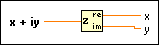

Complex To Re/Im Function
Owning Palette: Complex Functions
Requires: Base Development System
Breaks a complex number into its rectangular components.
The connector pane displays the default data types for this polymorphic function.

 Add to the block diagram Add to the block diagram |
 Find on the palette Find on the palette |